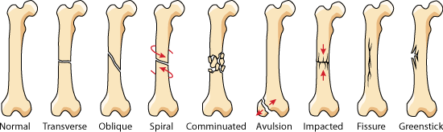
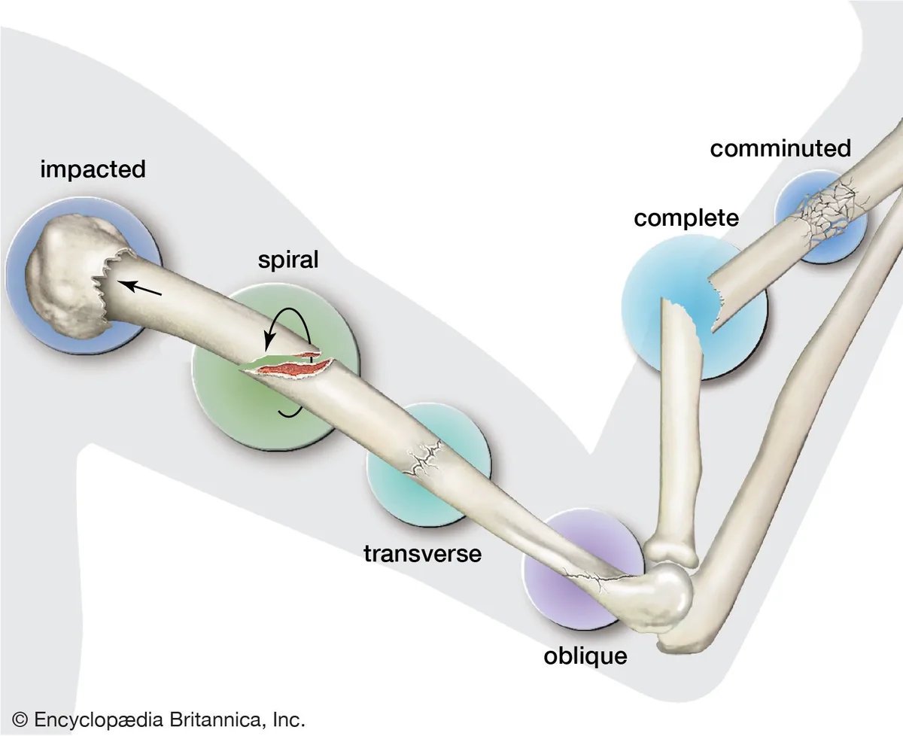
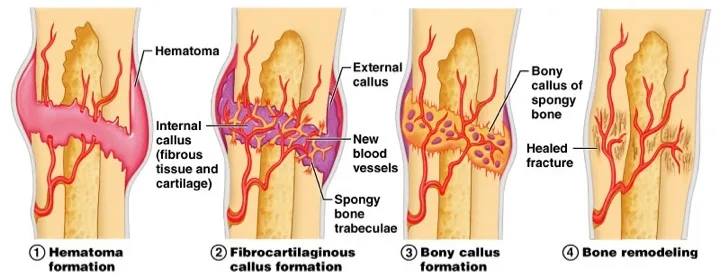
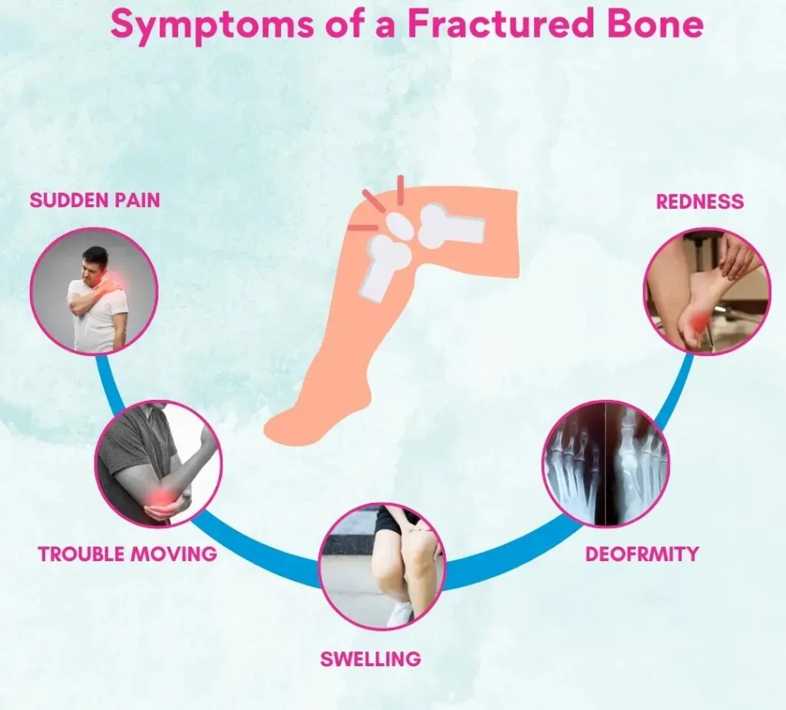

Expanded Nursing Uganda Explanation
Fractures. should be understood beyond a short definition. Link the concept to patient history, focused assessment, common risks, nursing priorities, documentation and evaluation of outcomes.
Contents, 14 sections (tap to expand)
01 Nursing Uganda Snapshot
A fracture is a break in bone continuity. Nursing care focuses on immobilization, pain relief, neurovascular protection, infection prevention, complication detection and patient education.
02 Build The Idea
Revise fractures by linking classification to risk. Open fractures raise infection risk, displaced fractures raise alignment risk, long-bone fractures raise bleeding and fat embolism risk.
- Closed: skin intact.
- Open: wound communicates with fracture site.
- Displaced: bone ends not aligned.
- Greenstick: incomplete fracture common in children.
- Pathological: bone breaks because disease has weakened it.
03 Ward Mode
A patient after a road traffic crash with a painful swollen limb should be handled gently, immobilized and assessed before movement.
- Use ABC approach if trauma is severe.
- Control bleeding and cover open wounds with sterile dressing.
- Immobilize the limb in the position found.
- Check pulse, capillary refill, colour, warmth, sensation and movement before and after splinting.
04 Red Flags
- Pain increasing despite analgesia.
- Pain on passive stretch.
- Numbness or tingling.
- Pale, cold or blue distal limb.
- Difficulty breathing after long-bone fracture.
- Fever, foul drainage or wet cast.
05 Patient Teaching
- Return immediately for severe pain, numbness, cold digits, swelling or foul smell.
- Do not wet the cast or insert objects under it.
- Continue permitted exercises for joints above and below the injury.
06 Exam Answer Map
- Definition.
- Causes.
- Classification.
- Signs and symptoms.
- First aid and management.
- Complications.
- Nursing care and patient education.
07 Meaning and Clinical Importance
A fracture is any break in the normal continuity of a bone. It may be a small crack, a partial break or a complete separation into two or more fragments.
For nurses, fractures are not only bone injuries. They affect pain, bleeding, mobility, circulation, nerves, skin integrity, independence, psychological comfort and the patient's ability to continue daily activities.
08 Clinical Extension: Fractures and Skeletal Injuries
A fracture is a break in the continuity of bone. In nursing practice it is studied with the skeletal system because bone structure, blood supply, periosteum, joints, muscles and nerves all influence the patient's pain, deformity, movement, circulation and healing.
- Common causes: direct trauma, twisting force, falls, road traffic injury, violent muscle contraction, repeated stress, osteoporosis, bone tumour, infection, malnutrition and ageing.
- Closed fracture: the bone is broken but the skin remains intact. Infection risk is lower, but bleeding, swelling and neurovascular compromise may still be serious.
- Open fracture: the wound communicates with the fracture site. Treat it as contaminated, cover with a sterile dressing, prevent further movement and refer urgently.
- Complete and incomplete fractures: complete fractures pass through the full width of bone, while incomplete fractures include greenstick and hairline injuries, especially in children or stress injuries.
- Pattern classification: transverse, oblique, spiral, comminuted, impacted, depressed, avulsion, compression and pathological fractures. The pattern helps predict stability and treatment.
- Priority assessment: pain, swelling, bruising, deformity, shortening, abnormal movement, crepitus, loss of function, wounds, bleeding and the mechanism of injury.
- Neurovascular checks: assess colour, warmth, capillary refill, distal pulses, sensation, movement, increasing pain and tightness before and after splints, casts or traction.
- Immediate nursing care: maintain airway and circulation if trauma is severe, control bleeding, immobilize the limb in the position found, elevate if appropriate, apply cold packs where safe, give analgesia as prescribed and prepare for X-ray or referral.
- Complications to remember: shock, haemorrhage, fat embolism, compartment syndrome, infection, delayed union, non-union, malunion, avascular necrosis, pressure injury under a cast and deep vein thrombosis.
- Patient teaching: keep the cast dry, do not insert objects under the cast, return urgently for numbness, blue fingers or toes, severe pain, swelling, foul smell, fever or inability to move digits.
09 Treatment and Nursing Management
- Reduction: restores bone alignment. It may be closed manipulation or open surgical reduction depending on the fracture.
- Immobilization: uses splints, casts, traction, external fixation or internal fixation to maintain alignment while healing occurs.
- Pain control: assess pain regularly, give prescribed analgesics, support the limb, reduce unnecessary movement and explain procedures before touching the injury.
- Cast care: check circulation, sensation and movement; keep the cast dry; support the wet cast with palms; observe for tightness, cracks, drainage, odour or pressure areas.
- Traction care: maintain correct line of pull, prescribed weight, skin care, pin-site care where applicable, pressure-area care and regular neurovascular observations.
- Rehabilitation: encourage safe exercises, breathing exercises if immobile, nutrition rich in protein/calcium/vitamin D, prevention of constipation and gradual return of function.
10 Revision Index
- Define fracture and list five causes.
- Differentiate closed, open, complete, incomplete, displaced and pathological fractures.
- Explain five signs of fracture and five neurovascular observations.
- List immediate first aid steps before referral.
- Describe complications that require urgent escalation.
11 Nursing Uganda Clinical Lens
Use Fractures as a practical nursing topic, not only a memorized definition. Connect structure, movement, pain, circulation, nerve function and safe mobility.
- What to understand first: define fractures, identify the normal or expected pattern, then explain what changes when the patient is unwell.
- Why it matters in care: the nurse must recognize risk early, explain findings clearly, document accurately and know when to escalate.
- How to revise it: connect each point to assessment, nursing diagnosis or care problem, intervention, rationale and evaluation.
12 Assessment Guide
- Pain score, site, onset, deformity, swelling, bruising and ability to move.
- Distal pulse, capillary refill, colour, warmth, sensation and movement.
- Skin integrity, wounds, cast tightness, traction alignment and pressure areas.
13 Nursing Priorities, Rationales and Outcomes
- Immobilize and protect the affected part while preventing further injury.
- Control pain and swelling while monitoring neurovascular status.
- Prevent complications such as compartment syndrome, infection, pressure injury and venous stasis.
The rationale for these priorities is patient safety: nursing actions should prevent deterioration, reduce discomfort, support recovery and create clear evidence for the next caregiver.
- Expected outcome: Pain is reduced, circulation and sensation remain intact, swelling is controlled and the patient mobilizes safely within the care plan.
14 Patient Teaching and Revision Check
- Explain fractures in simple language the patient or caregiver can repeat back.
- Teach warning signs, medicine or follow-up instructions, hygiene or lifestyle points where relevant.
- For exams, prepare a short answer using: definition, causes or risk factors, signs, assessment, management, complications and prevention.
- For ward practice, document baseline findings, actions taken, patient response and the plan for review.
Illustrations and Diagrams (8)






Related Video Lectures
Watch nursing lecture videos on YouTube for this topic. Opens in a new tab.
Watch on YouTubeExternal link: YouTube may use its own cookies and terms. Nursing Uganda is not affiliated with YouTube.